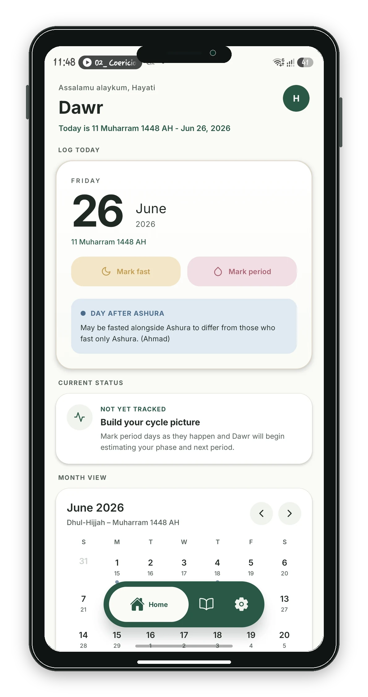
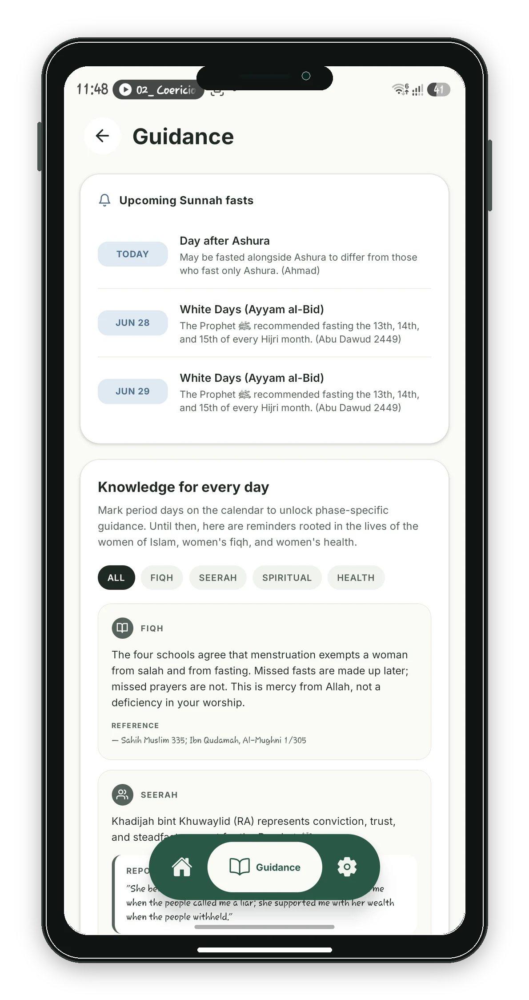
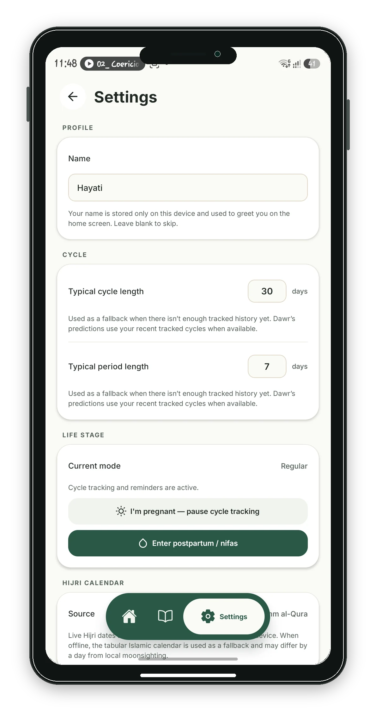
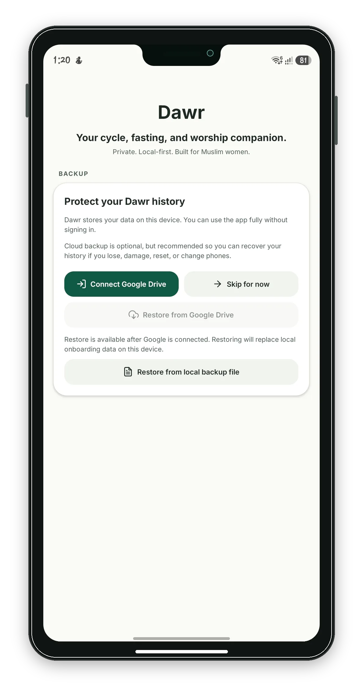
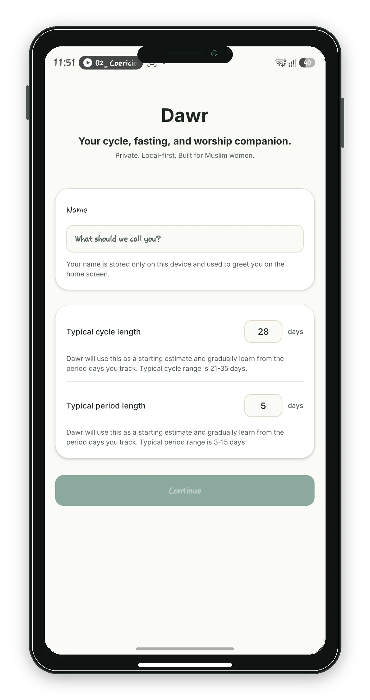

1
Cycle-aware calendar
View period days, clean days, and fasting days in a simple calendar shaped around Hijri awareness.
Hijri cycle and fasting tracker
A calm, private companion for tracking cycle days, obligatory and compulsory fasts, missed Ramadan fasts, with Hijri and Gregorian dates based on a local-first approach.
Features
Dawr keeps the essentials visible without making your personal tracking feel noisy or clinical.
View period days, clean days, and fasting days in a simple calendar shaped around Hijri awareness.
Track missed Ramadan fasts and keep an eye on upcoming fasting opportunities without clutter.
Helpful islamic reminders and informational guidance sit beside your data, curated to your phase needs.
App screens
Dawr on your screen.

Daily tracking, Hijri date context, and fasting actions.

Gentle reminders and context without replacing qualified advice.

Simple controls for personal preferences and data handling.

Optional backup support for protecting personal records.

A clear introduction to private, local-first tracking.
Privacy and local-first
Dawr is intended to feel personal because the information is personal. The app is built around local storage first, with optional backup tools when you choose to use them.
Core tracking data is kept on the device so the app remains useful without a required account.
Backup is a deliberate action, not a hidden background requirement for everyday tracking.
The experience avoids feeds, public profiles, and social pressure around private worship and health-adjacent notes.
Backup explanation
Backup exists so you can move or restore your Dawr data when you need to. It should be treated like a private copy of your notes.
Your daily tracking does not require publishing your records or signing into a Dawr account.
When backup is enabled, review where the file is stored and use an account you trust.
A backup can help recover data after changing devices or reinstalling the app.
Guidance disclaimer
Dawr may show Hijri dates, fasting-related context, and general informational guidance. It is not medical advice, religious verdict, or a replacement for qualified scholars, clinicians, or trusted local guidance. Always follow the guidance appropriate for your situation.
FAQ
No. Dawr is a personal tracking tool. It can help you record patterns, but it does not diagnose, treat, or replace medical care.
No. Dawr can organize dates and notes, but religious questions should be taken to qualified guidance you trust.
No account is required for core local tracking. Optional backup features may use a separate provider account if you choose to enable them.
Dawr is designed around local-first tracking. If you use a backup feature, that backup should be handled as a private copy of your personal records.
Contact
Reach out for app support, privacy questions, or feedback on how Dawr can feel more useful and respectful.
Privacy policy
This outlines what data is stored locally, what optional backup providers may receive, how support requests are handled, and how users can delete or export their information.